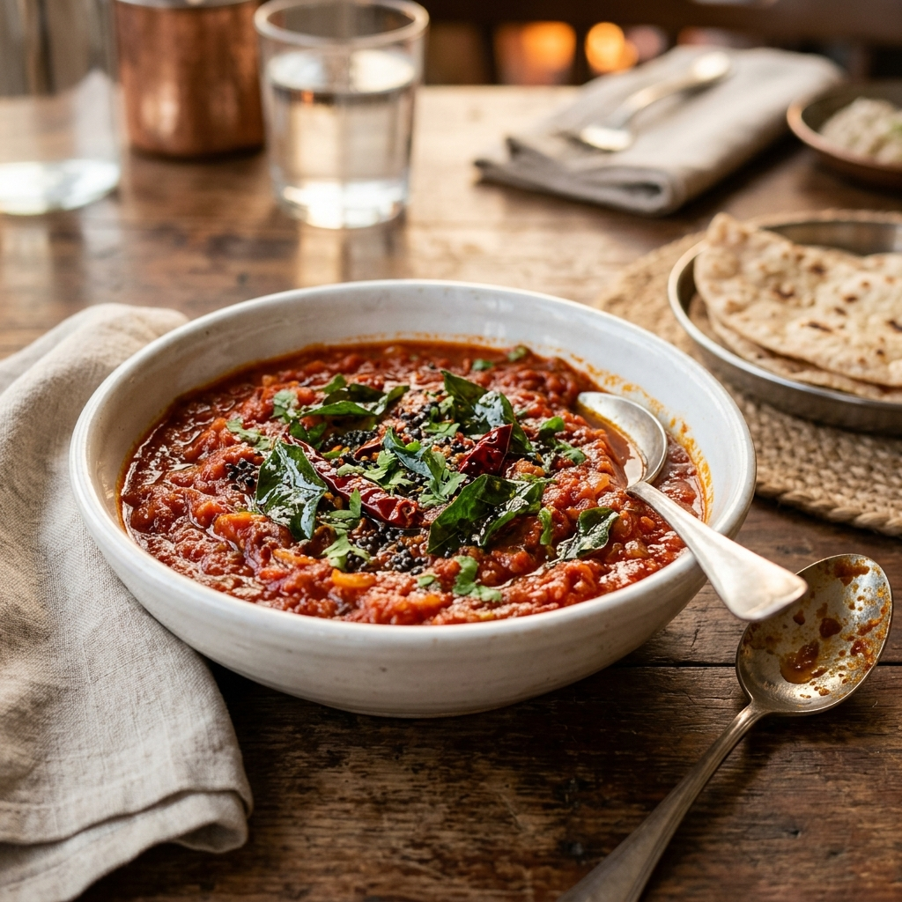

South Indian
Tomato Curry
A tangy and spicy South Indian Tomato Curry. Lightly mashed tomatoes cooked with a fragrant tempering of mustard, fenugreek, cumin, and curry leaves. Quick, easy, and absolutely delicious!
Prep Time
10 mins
Cook Time
15 mins
Total Time
25 mins
Servings
3
Instructions
- Heat the oil and temper: Heat 2 tbsp oil in a pan over medium heat. Add the fenugreek seeds, cumin seeds, mustard seeds, curry leaves, and dry red chilli. Let them splutter and release their aroma.
- Sauté aromatics: Add the green chillies, chopped onion, and minced garlic. Sauté for a few minutes until the onion softens and turns translucent.
- Cook tomatoes: Stir in the turmeric powder and chopped tomatoes. If you are using sweet hybrid tomatoes, add the small piece of tamarind at this point. Cover and cook on medium heat for 5 minutes.
- Add spices: Add salt, red chilli powder, roasted cumin powder, and coriander powder. Mix well, cover, and cook for another 5 minutes until the tomatoes are completely soft.
- Mash & thicken: Remove the cover and lightly mash the tomatoes using the back of your spatula. Cook for 2-3 more minutes until the curry thickens and comes together.
- Serve: Stir in the chopped fresh coriander leaves. Turn off the heat and serve hot with rice, dosa, or idli.